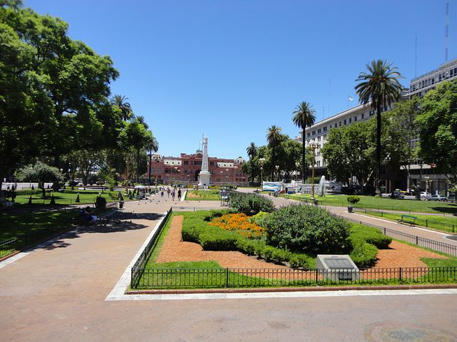
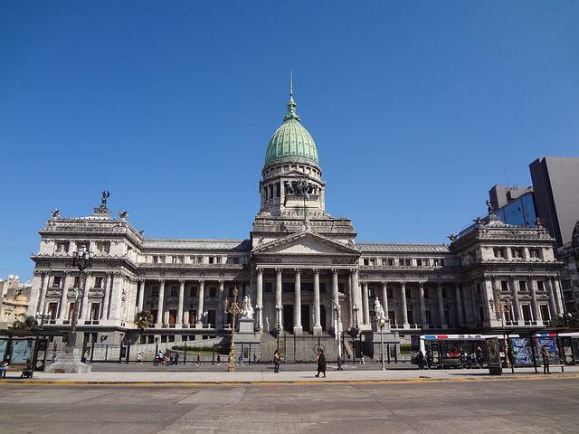
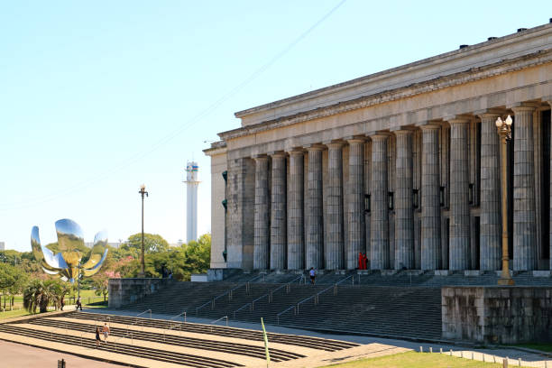
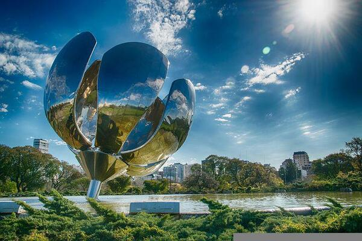
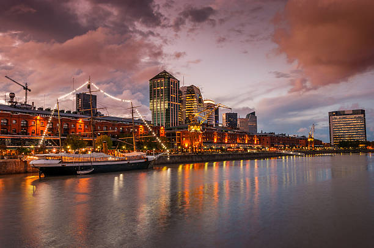
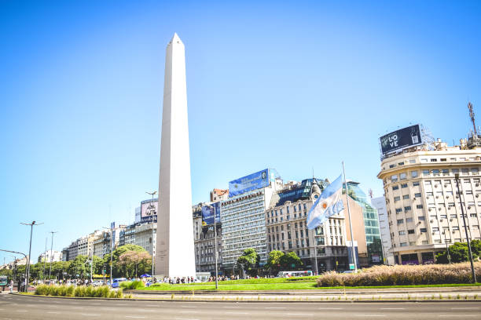
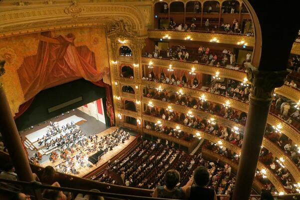
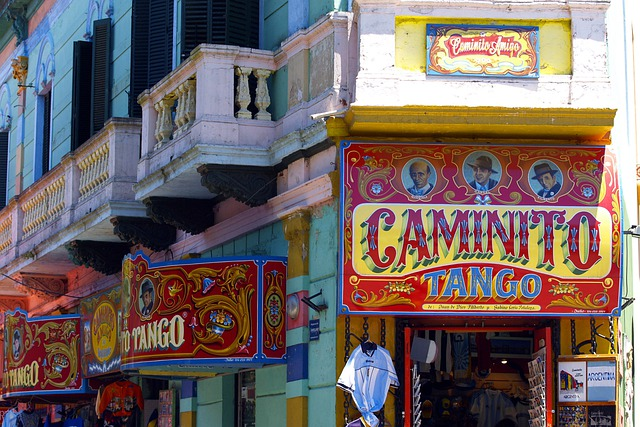

Discover Page

The Casa Rosada is the seat of the Executive Power of the Argentine Republic.

The Congress of the Argentine Nation is the body that exercises the federal legislative power of the Argentine Republic.

The School of Law is one of the thirteen faculties that make up the University of Buenos Aires.

The flower is an electrical system that automatically opens and closes the petals depending on the time of day.

Its converted red-brick buildings contain upscale steakhouses popular with tourists and business luncheoners.
The Women's Bridge is a counterweight pylon cable-stayed bridge designed by Spanish architect Santiago Calatrava in the city of Buenos Aires, Argentina.

The Obelisk of Buenos Aires is a historical monument considered an icon of the Autonomous City of Buenos Aires, Argentina, built in 1936.

The Teatro Colón is an opera house in the Autonomous City of Buenos Aires, Argentina. Due to its size, acoustics1 and trajectory, it has come to be considered one of the best opera houses in the world.

Caminito is an alley, museum and passage, of great cultural and touristic value, located in the neighborhood of La Boca in the city of Buenos Aires, Argentina.